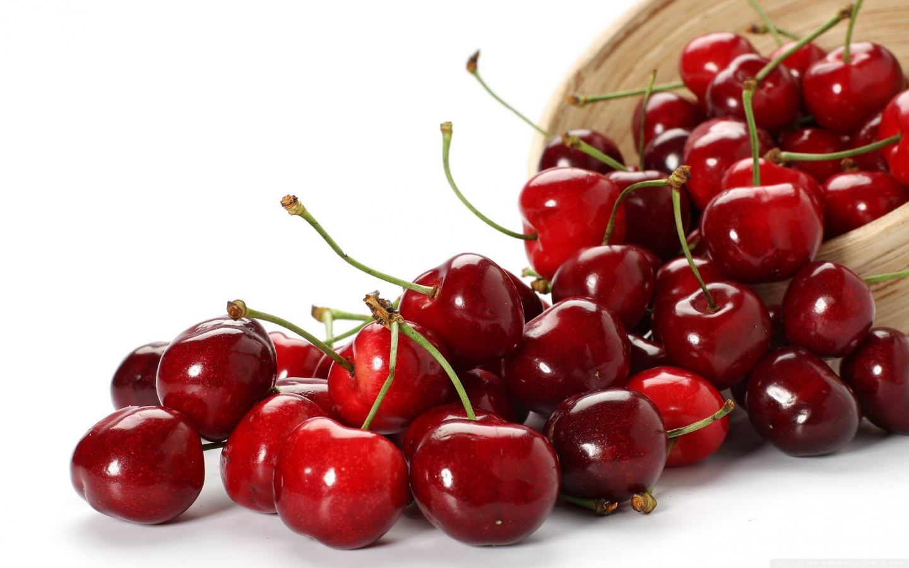

Manfaat Buah Ceri
Ceri adalah pohon yang sangat disukai di Jepang dan bunganya disebut sakura. Pada awal musim semi, di saat bunga ceri bermekaran, orang-orang berpiknik di taman-taman yang ditumbuhi pohon ini. Di Australia ceri biasanya matang sekitar waktu Natal, sedangkan di Amerika dan Eropa selatan pada bulan Juni. Produksi di seluruh dunia saat ini tiga juta ton per tahun. Selain itu bunga dan buah ceri juga dijadikan hiasan hidangan makanan atau minuman. Buah ceri mengandung antosianin, yaitu pigmen warna merah yang baik untuk kesehatan karena merupakan antioksidan. Selain itu, rutin mengkonsumsi buah ceri setiap hari dapat menurunkan jumlah kadar asam urat dalam tubuh, bahkan dapat menyembuhkan pirai.
Ceri asam juga lebih kaya akan antioksidan beta karoten, lutein, dan zeaxanthin. Baik ceri manis maupun asam juga memiliki antioksidan stabil melatonin serta flavonoid antosianin glikosida yang membuat warna mereka menjadi merah. Ceri termasuk salah satu makanan yang memiliki nilai antioksidan ORAC (kapasitas penyerapan radikal bebas) terbesar.

manfaat buah ceri
1. Kaya antioksidan
Buah ceri kaya akan antioksidan yang berkhasiat untuk mencegah penuaan dini dan mengurangi stress. Buah ceri juga dapat mencegah penyumbatan darah karena mengandung senyawa flavonoid atau glikisida antosianin.
2. Kaya akan Nutrisi
Ceri mempunyai kandungan nutrisi yang sangat tinggi sehingga sangat bermanfaat bagi kesehatan tubuh. Selain itu, buah ini memiliki kandungan kalori yang rendah sehingga aman. Hal ini sangat berguna bagi seseorang yang sedang dalam program penurunan berat badan.
3. Pengeluaran Racun
Pengeluaran racun atau yang sering dikenal dengan detoksifikasi juga bisa dimaksimalkan dengan mengkonsumsi buah ceri. Manfaat detox yang alami ini akan terjadi dengan aman, sehingga tidak akan menyebabkan efek samping.
4. Mengatasi Asam Urat
Kandungan antosianin dalam buah ceri berkhasiat untuk mengatasi asam urat sehingga efektif untuk mengurangi peradangan nyeri sendi.
5. Penghilang Rasa Sakit
Buah ceri bisa dimanfaatkan untuk menghilangkan rasa sakit tanpa mempunyai efek samping jika dikonsumsi secara tepat.
6. Sebagai Anti Inflamasi
Buah ceri selanjutnya yakni buah ini mengandung antosianin yang juga bermanfaat untuk anti inflamasi. Atau bisa dikatakan bahwa buah ceri dapat berperan untuk mencegah penyakit berat atau kronis.
7. Meningkatkan Gairah Suami Istri
Buah ceri mempunyai kandungan manfaat vitamin A dan manfaat Vitamin C yang tinggi. Hal ini membuatnya berkhasiat untuk meningkatkan gairah baik pria maupun wanita yang sudah menikah.
8. Mengurangi Nyeri Otot
Kandungan anti inflamasi pada buah ceri berkhasiat untuk mencegah nyeri otot. Sebuah studi yang dilakukan di Amerika Serikat menyebutkan pada atlet lari. Atlet yang meminum jus buah ceri sebelum lari jarak jauh, mengalami nyeri otot yang lebih sedikit jika dibandingkan dengan atlet yang tidak meminum jus buah ceri.
9. Efektif untuk Diuretik
Buah ceri mengandung kalium yang berkhasiat untuk diuretik yang efektif. Sistem diuretik yang baik, akan menjaga teraturnya proses pembuangan urin. Zat kalium ini juga banyak terdapat pada :
10. Membuat Tidur Nyenyak
Buah ceri dapat mengatur tidur seseorang karena kandungan melatonin yang ada di dalamnya. Selain itu, zat ini juga berguna untuk mengoptimalkan fungsi otak dengan mencegah terjadinya mudah lupa. Hal ini sama manfaat coklat bagi tubuh yang memberikan rasa tenang.
11. Merawat Kulit
Kandungan antioksidan pada buah ini termasuk yang tertinggi. Jus ceri sangat berkhasiat untuk mengurangi terjadinya masalah pada kulit. Ilmuwan dari Amerika juga menyatakan bahwa satu gelas jus ceri bisa mencegah penuaan dini jika diminum setiap hari.
12. Mengurangi Efek Radikal Bebas
Buah ini kaya akan flavonoid dan antioksidan yang berguna untuk menangkal efek radikal bebas sehingga bisa membantu mencegah penuaan dini dan mencegah kanker. Kandungan anti inflamasi buah ceri juag berkhasiat mencegah penyakit jantung.